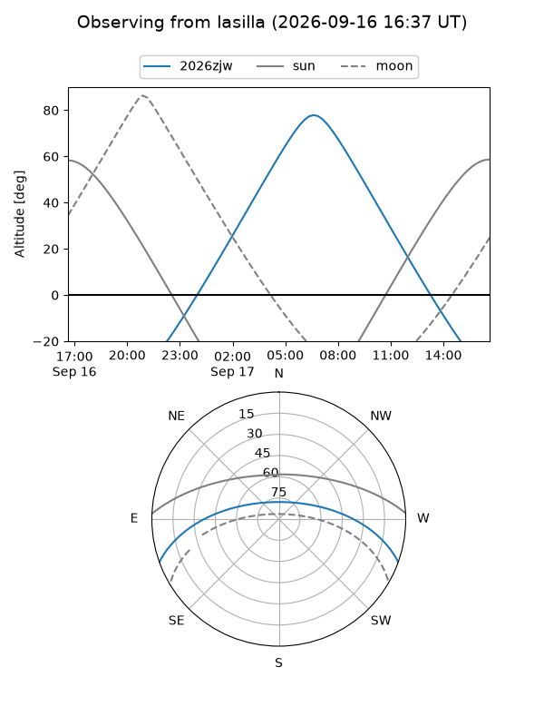
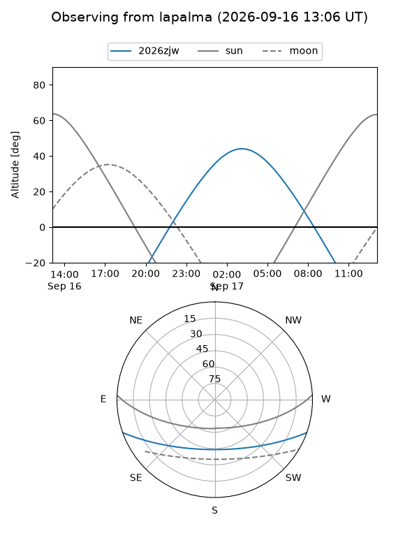
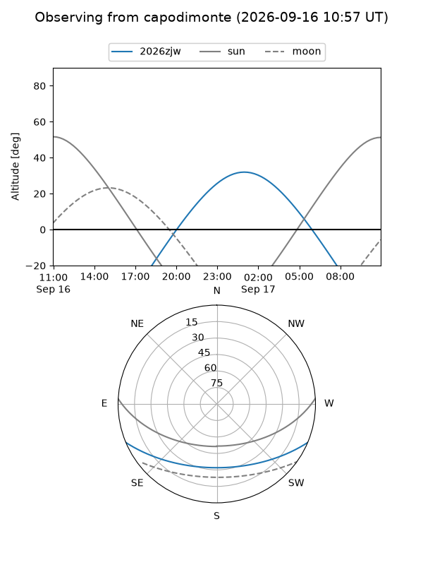
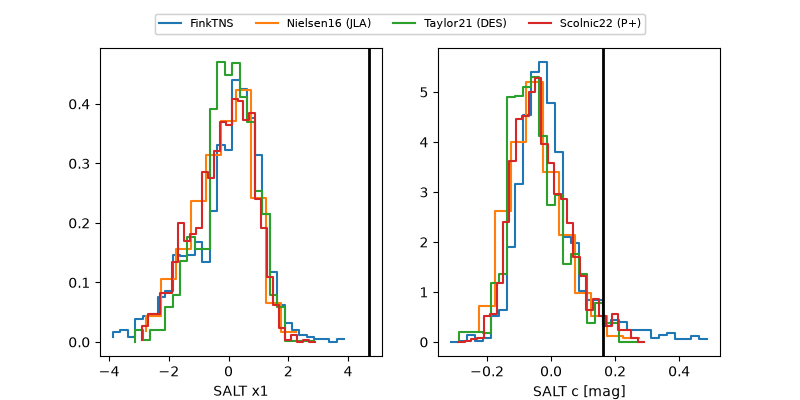

2026zjw
Target 2026zjw at 2026-09-16 17:35
Aliases and brokers:
FINK-ZTF: ztf.fink-portal.org/ZTF26abpvtkx
Lasair-ZTF: lasair-ztf.lsst.ac.uk/objects/ZTF26abpvtkx
ALeRCE-ZTF: alerce.online/object/ZTF26abpvtkx
YSE-PZ: ziggy.ucolick.org/yse/transient_detail/2026zjw
TNS name: wis-tns.org/object/2026zjw
Direct TNS query: direct search
alt names
ZTF26abpvtkx (ztf,fink_ztf)
2026zjw (tns,yse)
Coordinates:
equatorial (ra, dec) = 24.5308,-17.29491
equatorial (HMS+DMS) = 01:38:07.40,-17:17:41.68
galactic (l, b) = (172.9828,-75.40685)
Flags:
TNS type: nan
peak dt: +14.2
likely cv: !!
Photometry:
last atlasc=19.47, atlaso=19.38, ztfg=19.76, ztfr=19.35
1 atlasc, 3 atlaso, 7 ztfg, 3 ztfr detections
Lightcurve
Visibility



Additional plots
